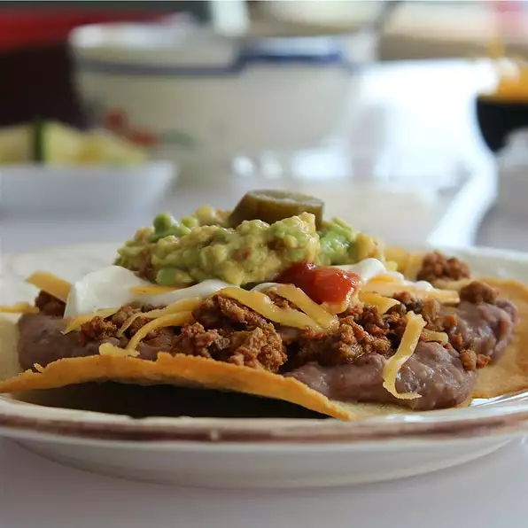

Home
Tasty Tostadas

Description
Beef tostadas. Enjoy with a cold beer and some Guacamole.
If you like spicy food, try this recipe.
Ingredients
Beef Mixture
- 1/2 teaspoon garlic salt
- 1/2 teaspoon onion powder
- 1/2 teaspoon garlic powder
- 1/2 teaspoon ground cumin, or to taste
- 1/4 teaspoon ground black pepper
- 1/2 pound ground beef
- 1/2 cup chopped sweet onion, or more to taste
- 1 clove garlic, minced
Tostada Shells
- 6 corn tortillas
- 2 tablespoons vegetable oil
Beans
Garnishes
- 2 cups shredded lettuce, or as desired
- 1 1/2 cups shredded Cheddar cheese
- 1 tomato, diced
Steps
- Preheat oven to 200 degrees C(400 degrees F).
- Mix garlic salt, onion powder, garlic powder, cumin,
and black pepper together in a small bowl.
- Heat a large skillet over medium-high heat. Cook and
stir beef, onion, and garlic in the hot skillet until
browned and crumbly, 5 to 7 minutes; drain and discard
grease. Keep warm while preparing tostada shells.
- Brush oil over both sides of tortillas and arrange on
a baking sheet.
- Bake tortillas in preheated oven until crisped on top,
about 5 minutes. Flip tortillas and continue baking
until other side crisps, 2 to 3 minutes more.
- Heat refried beans in a saucepan over medium-low,
stirring regularly until hot, about 5 minutes.
- Divide refried beans between tostadas and spread over
one side of each; spoon ground beef over the beans. Top
each tostada with lettuce, Cheddar cheese, and diced
tomato.
- Serve and enjoy